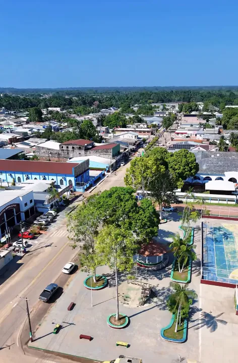
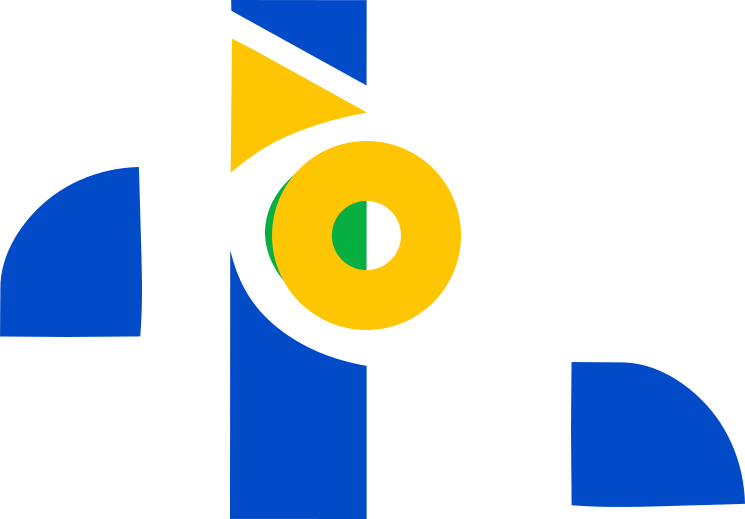

Pré-candidato a Vereador de Feijó
Diálogo, trabalho e um olhar atento para as pessoas de Feijó.
Conheça mais
Nossa história
Emilson Júnior é um acreano que acredita no poder das pessoas, no diálogo e no trabalho coletivo para construir uma cidade mais justa, humana e com mais oportunidades para todos.
-
Pessoas em primeiro lugar
Escuta, respeito e diálogo sempre.
-
Compromisso com Feijó
Trabalho sério por uma cidade melhor.
-
Juntos por mais oportunidades
Uma cidade que valoriza sua gente.
Meu compromisso
Por uma Feijó cada dia melhor
Acreditamos em uma Feijó com mais escuta, mais oportunidades e mais qualidade de vida para as pessoas. É com diálogo e participação que podemos construir um futuro melhor para a nossa cidade.


Sua participação importa
Sua voz faz Feijó crescer
Conte o que importa para você e compartilhe suas ideias para a nossa cidade.